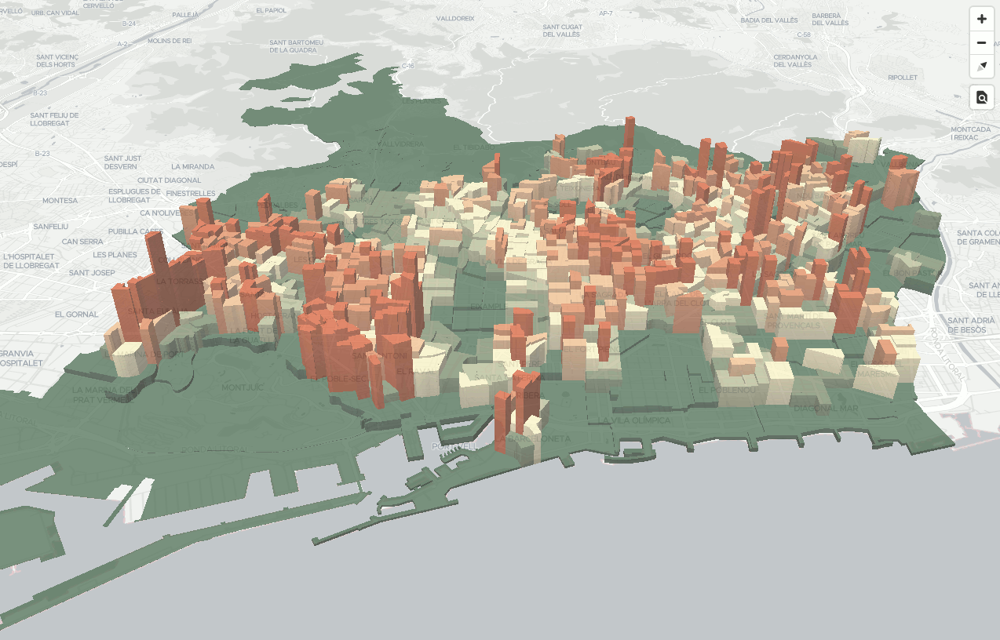

Cómo servir datos dinámicos
Partiremos de unos datos con los distritos, barrios y secciones censales de Barcelona.
Los datos están en datos/bcn_geodata.sql.
Note
El origen de los datos es Ajuntament de Barcelona CC-by (http://w20.bcn.cat/cartobcn/). Martín González los convirtió a GeoJSON (https://github.com/martgnz/bcn-geodata). Para el taller los hemos convertido de GeoJSON a PostGIS.
Cargarlos en PostGIS:
1 | psql < datos/bcn_geodata.sql |
Se creará una BDD bcn_geodata con las tablas barrios, distritos y seccion_censal.
Se puede acceder a esta BDD con el usuario user, password user.
Una vez con los datos cargados en PostGIS, usaremos tegola para levantar un servidor de teselas
vectoriales partir de una BDD PostGIS.
Instalando Tegola
Tegola consiste en un solo fichero ejecutable. La instalación consiste en descargarse un zip, descomprimirlo, y copiar el fichero ejecutable resultante en una ruta localizable:
1 2 3 | wget https://github.com/go-spatial/tegola/releases/download/v0.6.3/tegola_linux_amd64.zip unzip tegola_linux_amd64.zip sudo mv tegola_linux_amd64 /usr/local/bin/tegola |
Comprobar que puede ejecutarse tegola correctamente, y borrar el zip:
1 2 | tegola -h # comprobar instalacion
rm tegola_linux_amd64.zip
|
Configurando Tegola
Tegola necesita de un fichero de configuración en formato toml para funcionar. En él estableceremos los parámetros de conexión con la BDD y las características de las capas que queremos servir.
Creemos pues un directorio llamado tegola, y en él, un fichero llamado config.toml.
Lo primero es definir una sección con el puerto que usaremos para levantar el servicio:
1 2 | [webserver] port = ":8083" |
A continuación definimos la conexión con la BDD en una sección providers. Dentro del provider, definimos las capas de
datos que queremos obtener de la BDD. En nuestro caso son muy sencillas:
1 2 3 4 5 6 7 8 9 10 11 12 13 14 15 16 17 18 19 20 | [[providers]] name = "postgis" type = "postgis" host = "localhost" port = 5432 database = "bcn_geodata" user = "user" password = "user" [[providers.layers]] name = "distritos" tablename = "distritos" [[providers.layers]] name = "barrios" tablename = "barrios" [[providers.layers]] name = "seccion_censal" tablename = "seccion_censal" |
En estas providers.layers también se podrían seleccionar qué columnas queremos obtener, o incluso indicar una consulta SQL para
generar la capa, haciendo JOIN de varias tablas, aplicando operaciones espaciales, etc. En nuestro caso, servimos las
tablas tal cual.
Finalmente, creamos una sección maps, que consiste en un nombre, y una serie de capas de información:
1 2 3 4 5 6 7 8 9 10 11 12 13 14 15 16 17 18 19 20 21 22 23 | [[maps]] name = "bcn_geodata" attribution = "CC-by Ajuntament de Barcelona" center = [2.175, 41.39, 13.0] bounds = [1.898, 41.246, 2.312, 41.533] [[maps.layers]] provider_layer = "postgis.seccion_censal" dont_simplify = true min_zoom = 11 max_zoom = 16 [[maps.layers]] provider_layer = "postgis.barrios" dont_simplify = true min_zoom = 10 max_zoom = 16 [[maps.layers]] provider_layer = "postgis.distritos" dont_simplify = true min_zoom = 0 max_zoom = 16 |
En estas maps.layers se indican parámetros para la generación de las VT, como el rango de niveles de zoom en las que
serán visibles, si se simplificará o no la geometría.
En la configuración también existe la posibilidad de activar una caché en disco, en s3 o en redis, así como comandos para invalidar partes de la caché. En nuestro caso, no hemos usado caché.
Arrancando tegola
Arrancamos el servicio desde el directorio donde hayamos guardato config.toml:
1 2 | cd tegola
tegola serve
|
Y abrimos http://localhost:8083 :

Activando "Inspect Features" podremos ver los atributos de cada elemento.
Las teselas están disponibles en: http://localhost:8083/maps/bcn_geodata/{z}/{x}/{y}.pbf
Incorporando los datos en el visor de Barcelona
Añadiremos el siguiente código javascript a barcelona.html para incorporar el nuevo origen de datos, y una simbolización básica para mostrar las secciones censales:
1 2 3 4 5 6 7 8 9 10 11 12 13 14 15 16 17 18 | map.on('load', function() { map.addSource('bcn_geodata', { "type": "vector", "tiles": ["http://localhost:8083/maps/bcn_geodata/{z}/{x}/{y}.pbf"] }); map.addLayer({ "id": "seccion_censal", "source": "bcn_geodata", "source-layer": "seccion_censal", "type": "fill", "paint": { "fill-opacity": 0.6, "fill-color": "#fcc", "fill-outline-color": "#000" } }); }); |

Temático avanzado
Expresiones matemáticas
En las tablas tenemos los campos de población divididos en hombres (homes) y mujeres (dones), así como el área en
m² de cada sección. Con estos datos, podemos calcular la densidad de población en habitantes/km² según la fórmula:
1 | densidad = (homes+dones)/(area/1000000) |
El estilo de mapbox-gl permite expresar operaciones matemáticas usando expresiones, de la forma:
["+", ["get", "homes"], ["get", "dones"]]para sumar la población de hombres y de mujeres["/", ["get", "area"], 1000000]para pasar el área de m² a km²
Y, combinando ambas, obtenemos la densidad de población en habitantes/km²:
1 2 3 4 | ["/", ["+", ["get", "homes"], ["get", "dones"]], ["/", ["get", "area"], 1000000] ] |
Rampas de color
Así mismo, las expresiones de los estilos de mapbox-gl nos permiten aplicar un número discreto de valores de salida a rangos de entrada. Las definiciones del manual sin un ejemplo concreto son algo difíciles de leer:
1 2 3 4 5 6 | ["step", input: number, stop_output_0: OutputType, stop_input_1: number, stop_output_1: OutputType, stop_input_n: number, stop_output_n: OutputType, ... ]: OutputType |
Pero supongamos que queremos aplicar esta expresión para asignar tres colores en función de rangos de densidad (< 10.000 hab/km²,
de 10.000 a 25.000 hab/km², y > 25.000 hab/km²), la expresión sería:
1 2 3 4 5 6 | ["step", ["get", "densidad"], "<Color_1>", 10000, "<Color_2>", 25000, "<Color_3>" ] |
Más sencillo de lo que parecía.
Combinando ambas expresiones
Podemos combinar ambas expresiones: "calcula la densidad y luego asigna un color en función de su valor"
1 2 3 4 5 6 7 8 9 10 11 12 13 | ["step", ["/", ["+", ["get", "homes"], ["get", "dones"]], ["/", ["get", "area"], 1000000] ], "#3d5941", 17703, "#778868", 29678, "#b5b991", 37617, "#f6edbd", 46016, "#edbb8a", 54401, "#de8a5a", 66570, "#ca562c" ] |
Tip
Los valores de corte para los diferentes colore se han obtenido calculando los cuantiles con PostgreSQL:
1 2 3 4 5 6 7 | SELECT ntile, CAST(min(densitat) AS INTEGER) AS minAmount, CAST(max(densitat) AS INTEGER) AS maxAmount FROM (SELECT (homes+dones)/(area/1000000) as densitat, ntile(7) OVER (ORDER BY (homes+dones)/(area/1000000)) AS ntile FROM seccion_censal) x GROUP BY ntile ORDER BY ntile; |
Y la rampa de color y sus valores RGB de cada color se han obtenido de carto-colors, que a su vez están inspirados en ColorBrewer.
Aplicada a la propiedad fill-color del estilo:
1 2 3 4 5 6 7 8 9 10 11 12 13 14 15 16 17 18 19 20 21 22 23 | map.addLayer({ "id": "seccion_censal", "source": "bcn_geodata", "source-layer": "seccion_censal", "type": "fill", "paint": { "fill-opacity": 0.75, "fill-color": ["step", ["/", ["+", ["get", "homes"], ["get", "dones"]], ["/", ["get", "area"], 1000000] ], "#3d5941", 17703, "#778868", 29678, "#b5b991", 37617, "#f6edbd", 46016, "#edbb8a", 54401, "#de8a5a", 66570, "#ca562c" ], "fill-outline-color": "#000" } }); |
Obtendremos:

Reto: Añadir extrusión 3D
Aplicar una extrusión a cada sección censal de altura proporcional a su densidad de población:
